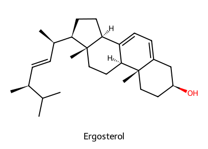
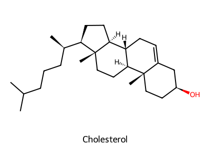
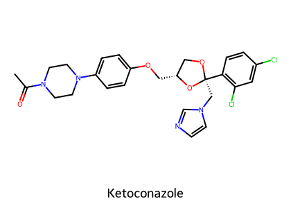
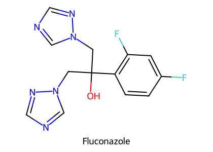
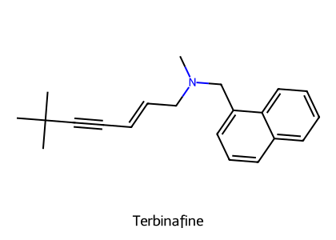
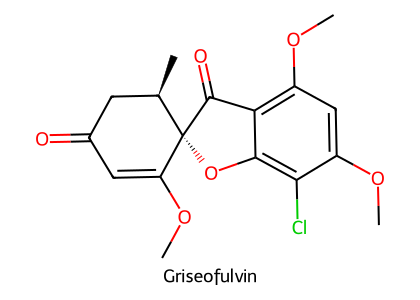
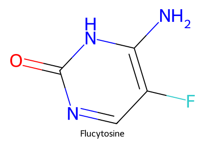

重點摘要
真菌和動物一樣是真核生物，所以抗黴菌藥很難做到「只打真菌」。選擇性的來源主要只有一個：真菌細胞膜用 ergosterol，動物用 cholesterol。多烯類直接抓住 ergosterol 在膜上打洞；唑類與 terbinafine 阻斷 ergosterol 的合成（分別在 lanosterol 去甲基與 squalene 環氧化兩個步驟）。另外兩條路：griseofulvin 阻斷有絲分裂（微管），flucytosine 被真菌自己轉成 5-FU 破壞核酸合成。毒性也跟選擇性不夠有關：amphotericin B 也會抓 cholesterol（腎毒性），唑類也會抑制動物的 P450（交互作用、抑制類固醇合成）。


- 膜：多烯（抓 ergosterol）
- Ergosterol 合成：唑類（lanosterol 14α-demethylase，P450）、terbinafine（squalene epoxidase）
- 有絲分裂：griseofulvin
- 核酸：flucytosine
結構式依 PubChem 資料以 RDKit 自繪。
- Amphotericin B 是全身性黴菌感染的主力；主要毒性是腎毒性（腎血管收縮＋直接傷害腎小管 → 失鉀、腎小管酸中毒）；脂質劑型可提高劑量、降低腎毒性。對皮癬菌無效。
- Nystatin、Natamycin 注射太毒，只局部或口服用；natamycin 是馬 Fusarium 角膜黴菌病的首選。
- 唑類抑制真菌 P450（lanosterol 去甲基）；imidazole（2 個 N）選擇性比 triazole（3 個 N）差，交互作用與副作用較多（2025 期末考：posaconazole 的作用與抑制 P450 有關）。
- Ketoconazole：抑制動物類固醇合成（可治 Cushing's）、貓肝毒性；全身性黴菌病已多被 itraconazole、fluconazole 取代。
- Itraconazole、ketoconazole 需要胃酸溶解 → 併用 PPI、H2 blocker、制酸劑會降低吸收；fluconazole 例外（口服近 100%、進入 CSF 50–90%）。
- Terbinafine 抑制 squalene epoxidase、不影響 P450、幾乎沒有交互作用；Griseofulvin 是 P450 誘導劑、沉積在新生角質，懷孕貓禁用、FIV 貓易白血球減少。
- Flucytosine 被真菌 cytosine deaminase 轉成 5-FU（哺乳類沒有此酶）；與 amphotericin B 協同治療隱球菌腦膜炎；腎衰竭時排除受阻。
本頁藥物總覽
劑量取自講義所附的 MSD Veterinary Manual 劑量表（講義 p18、p23、p35）與講義內文；臨床使用以院內規範為準。
| 藥物 | 類別／標的 | 途徑與參考劑量（犬貓） | 主要用途 |
|---|---|---|---|
| Amphotericin B（deoxycholate） | 多烯／結合 ergosterol | IV 緩慢 0.25–1 mg/kg 每週 3 次，總劑量 4–11 mg/kg 或至出現氮血症 | 全身性黴菌病（隱球菌、芽生菌、組織胞漿菌等） |
| Amphotericin B lipid complex（Abelcet®） | 脂質劑型 | IV 1–3 mg/kg 隔日或每週 3 次，總劑量 12–24 mg/kg | 同上，腎毒性較低 |
| Liposomal amphotericin B（AmBisome®） | 微脂體劑型 | IV 3–4 mg/kg 隔日或每週 3 次，總劑量 12–30 mg/kg | 可達 CNS、腎毒性最低 |
| Nystatin | 多烯 | PO 犬 50,000–150,000 U q8h；局部（耳、眼） | 腸道念珠菌、馬拉色菌耳炎、火雞嗉囊黴菌症 |
| Natamycin（Pimaricin） | 多烯 | 眼用 5% 懸浮液 1 滴 q1–2h 起，之後每日 6–8 次 | 馬 Fusarium 角膜黴菌病首選 |
| Ketoconazole | Imidazole／抑制 P450 | PO 犬 5–20 mg/kg q12h、貓 10 mg/kg q12h；隨餐 | 全身性黴菌病（已多被取代）、Cushing's |
| Miconazole、Clotrimazole、Econazole | Imidazole | 局部 | 念珠菌、麴菌、皮癬菌 |
| Enilconazole | Imidazole | 鼻內 10 mg/kg q12h 7–14 天；0.2% 溶液局部每週兩次 | 犬鼻腔麴菌病（蒸氣作用）、皮癬菌 |
| Itraconazole | Triazole | PO 犬 5–10 mg/kg q12–24h；貓 2.5 mg/kg q12h 或 5 mg/kg q24h | 全身性黴菌病、皮癬菌、麴菌 |
| Fluconazole | Triazole | PO 犬 5–10 mg/kg q12–24h；貓 50 mg/隻 q12h | 隱球菌（含 CNS）、念珠菌 |
| Voriconazole | Triazole | PO 犬貓 4–5 mg/kg q12h（空腹）；馬角膜 1% 眼用 | 麴菌；治療窗窄需 TDM |
| Posaconazole | Triazole | PO 犬 5 mg/kg q12h；有耳用製劑 | 麴菌等；犬神經元磷脂質沉積 |
| Terbinafine | Allylamine／squalene epoxidase | PO 30 mg/kg/day 或局部 | 犬貓皮癬菌；鳥全身性黴菌 |
| Griseofulvin | 結合微管／抑制有絲分裂 | PO 犬貓 microsized 10–50（至 130）mg/kg/day；ultramicrosized 5–20（至 50）mg/kg/day；隨高脂食物 | 皮癬菌（Microsporum、Trichophyton、Epidermophyton） |
| Flucytosine（5-FC） | 真菌內轉成 5-FU | PO 犬 25–50 mg/kg、貓 30–40 mg/kg q6–8h | 隱球菌腦膜炎（併 amphotericin B） |
| Lufenuron | 幾丁質合成抑制 | PO | 犬貓除蚤；抗黴菌效果有爭議 |
| Sodium／potassium iodide | 機轉不明 | PO | 最早的抗黴菌藥之一 |
| Mefenoxam | 抑制 rRNA 聚合酶 | PO | 犬腸道腐黴菌病（併 itraconazole＋terbinafine） |
真菌感染背景與藥物分類
- 致病真菌是真核生物：絲狀黴菌（菌絲）或細胞內酵母菌。原發性感染多由絲狀真菌造成，伺機性感染多由酵母菌造成。
- 雙型性真菌：在宿主體內呈酵母樣，在室溫培養時呈黴菌型。例：Candida 念珠菌、Blastomyces dermatitidis、Coccidioides immitis、Histoplasma capsulatum、Sporothrix schenckii、Rhinosporidium。
- 真菌侵襲性與毒力低；壞死組織、潮濕環境、免疫抑制是促成感染的因素。
- 感染可為表淺且刺激性（皮癬菌病）或全身性且致命（芽生菌病、隱球菌病、組織胞漿菌病、球孢子菌病）。
| 作用標的 | 類別 | 藥物 |
|---|---|---|
| 細胞膜 | 多烯類（結合 ergosterol 改變細胞膜） | Nystatin、Amphotericin B、Natamycin |
| 唑類（抑制 P450 → ergosterol 合成） | Imidazole：ketoconazole、miconazole、clotrimazole、econazole、thiabendazole（也是驅蟲藥） Triazole：itraconazole、fluconazole、voriconazole、posaconazole | |
| Allylamine（squalene → ergosterol 轉換） | Terbinafine | |
| 細胞核分裂 | 結合微管、阻斷有絲分裂 | Griseofulvin |
| 核酸合成 | 破壞 thymidylate synthase 與 DNA、RNA 合成 | 5-Flucytosine |
多烯類 Polyene Macrolides
最古老的全身性抗黴菌藥：大分子，含一長段多烯（脂溶性部分）。在水與常見有機溶劑中溶解度差，在水溶液、酸、鹼中不穩定；乾燥、避光避熱時穩定。
作用機轉
- 對宿主細胞膜的 cholesterol 也有些親和力 → 毒性閾值低。Amphotericin B 對 ergosterol 的親和力大於 cholesterol，所以比較適合 IV 使用。
- 臨床濃度下多為抑菌；高濃度且 pH 6.0–7.3 時可殺菌。
- Amphotericin B 也有免疫調節作用（體液與細胞免疫）。
- 抗菌譜：酵母菌到絲狀真菌都有效，但對皮癬菌無效。Nystatin 對 Aspergillus 與皮癬菌無效。
Amphotericin B
- Streptomyces nodosus 產物；兩性（weak acid＋weak base）
- 沒有 FDA 核准的獸醫劑型 → 仿單外使用
- Deoxycholate 膠體：溶於 5% 葡萄糖做 IV 輸注
- 脂質劑型（Abelcet®、AmBisome®）：網狀內皮細胞吞噬脂質，把藥送到感染部位、減少腎臟暴露 → 可給更高劑量、肝腎毒性較低、作用較長；AmBisome 可達 CNS，犬可耐受 4 mg/kg × 30 天
- 口服吸收差 → IV
- 雙相排除：前 24 h 快速下降；第二相 t½ 約 15 天 → 每 48–72 h IV 一次，直到達累積總劑量
- 每日原形經尿約 5%，2 週約 20%；膽汁占 20–30%
- 腎血管收縮：IV 後 15 分鐘內出現、持續 4–6 h → 腎血流與 GFR 下降。
- 直接腎小管傷害：結合 cholesterol → 電解質漏出（失鉀）與腎小管酸中毒。
- 預防：電解質負荷（先給 NaCl IV）、輸液利尿、緩慢輸注。VPT10：單次超過 1 mg/kg 很可能造成急性腎傷；監測尿沉渣、BUN、肌酸酐、電解質，出現活動性尿沉渣或肌酸酐上升時暫停。
- 其他：直接造成肥大細胞去顆粒 → 類過敏反應；角膜穿透差、>3% 刺激角膜；厭食、嘔吐、藥物熱、正球性正色素性貧血、心律不整、肝功能異常、神經症狀；VPT10 另列靜脈炎。
臨床用途：犬、貓、馬、鳥的全身性黴菌感染；可併用 ketoconazole、fluconazole、itraconazole（降低毒性）或 flucytosine（治療 CNS、骨與眼部感染）。
Nystatin 與 Natamycin
| Nystatin | Natamycin（Pimaricin） | |
|---|---|---|
| 來源 | Streptomyces noursei | — |
| 全身使用 | 注射太毒，任何物種都不建議 | 價格與毒性都不允許 |
| 用途 | 多藥耳用製劑治犬貓馬拉色菌耳炎；眼用治黴菌性角膜炎；FDA 核准飼料添加劑治火雞嗉囊黴菌症與黴菌性下痢；口服治腸道念珠菌 | 馬 Fusarium 角膜黴菌病首選；鼻腔麴菌、喉囊黴菌病、皮癬菌局部治療 |
| 吸收 | 局部與完整黏膜幾乎不吸收（家禽口服 1,400 mg/kg × 66 天仍無全身吸收）；但腸道屏障受損的產食動物可能吸收 → 殘留 | 人用 5% 眼用懸浮液 |
唑類 Azoles重要


結構式依 PubChem 資料以 RDKit 自繪。
作用機轉
- 也抑制脂肪酸合成、氧化與過氧化酶活性。
- 宿主 cholesterol 不受影響，但某些藥物會抑制宿主的類固醇合成與藥物代謝酵素。
- 因為是抑制合成，藥效有延遲，半衰期長更延長起效時間（相對於 amphotericin B）。
- Imidazole 選擇性低於 triazole → 交互作用與副作用較多。
獸醫用途（講義）
- 有效對抗念珠菌與對 griseofulvin 有抗藥性的皮癬菌。
- Ketoconazole：犬、貓、馬、鳥的全身性黴菌症與嚴重酵母菌感染；高劑量治療犬貓腎上腺皮質功能亢進；抑制 testosterone 與腎上腺類固醇合成，可輔助治療 Cushing's、攝護腺癌（抗黴菌劑量下也可能抑制，停藥後恢復）。見 類固醇藥理。
- 全身性黴菌症中，itraconazole、fluconazole 已取代 ketoconazole：半衰期較長、活性較強、毒性較低。
- Clotrimazole、miconazole 局部治療念珠菌、麴菌、皮癬菌；posaconazole 有耳用製劑；enilconazole 鼻內灌注治療犬鼻腔麴菌病（蒸氣作用）。
藥動學
| 藥物 | 吸收 | 分布與排除 |
|---|---|---|
| Ketoconazole | 小動物口服吸收差，馬不吸收；需胃酸溶解 | 劑量依賴性排除（劑量越大半衰期越長）；雙相；通常 q12h |
| Itraconazole | 需胃酸；膠囊不可磨碎（降低生體可用率）；有口服液 | 半衰期長（貓可達 48 h）→ q12–24h |
| Fluconazole | 口服近 100%，不需胃酸 | CSF 達血漿 50–90%（其他唑類 CSF 穿透差）；蛋白結合低 |
| Voriconazole | 空腹服用；雞的生體可用率 <20% | 非線性藥動（肝代謝飽和）、治療窗窄（1–5.5 mg/L）→ 建議 TDM |
| 共通 | Triazole 快速但不穩定吸收，2 h 達峰；調劑藥局製劑生體可用率可能很差，建議監測 | 除 fluconazole 外蛋白結合 >95%；肝、腎上腺、肺、腎濃度最高；唾液、乳汁、耳垢中可測得 |
除了 fluconazole，triazole 溶解需要酸性環境；制酸劑、PPI、H2 blocker（cimetidine、ranitidine）與抗膽鹼藥會降低吸收與療效。Itraconazole、ketoconazole 隨餐給（刺激胃酸）。見 腸胃道用藥。
抗菌譜與抗藥性
- Miconazole：廣譜（芽生菌、組織胞漿菌、念珠菌、球孢子菌、隱球菌、A. fumigatus）；ketoconazole 類似，對 C. immitis 更有效。
- Itraconazole、fluconazole 最具活性：雙型性真菌與皮癬菌；部分麴菌病（60–70%）與皮膚孢子絲菌病；fluconazole 對麴菌效果較差。
- Clotrimazole、econazole：表淺黴菌病；econazole 也用於眼黴菌病。Thiabendazole 對 Aspergillus、Penicillium 有效但已被取代。
- 抗藥性機轉：ABC 轉運體（CDR1、CDR2）上調 → 外排增加；ERG11（lanosterol demethylase）突變 → 結合力下降；major facilitator 轉運體表現增加。馬子宮分離株有 itraconazole、fluconazole 抗藥；隱球菌有 fluconazole 抗藥；犬貓 A. fumigatus 尚無唑類抗藥證據；歐洲禽類 A. fumigatus 有 itraconazole、voriconazole 抗藥報告。
唑類毒性與藥物交互作用重要
- 最常見：輕微腸胃不適（厭食、嘔吐、腹瀉），貓用 ketoconazole 時特別明顯。
- 肝毒性：所有唑類都可能造成肝指數異常，極少數臨床肝炎；ketoconazole 尤其在貓。
- 抑制動物 P450 → 交互作用；抑制性類固醇與 cortisol 合成 → 犬生殖障礙、對 ACTH 的反應下降（尤其 ketoconazole）。
- Itraconazole：人有黑框警語（負性肌力）→ 心室功能受損者可能發生 CHF；非洲灰鸚鵡較敏感。
- Posaconazole：犬神經元磷脂質沉積；以葡萄糖醛酸結合代謝 → 貓謹慎。
- Fluconazole、ketoconazole 有致畸胎性 → 懷孕動物避免（VPT10 也記載 ketoconazole 致畸胎）。
- Ketoconazole＋griseofulvin 併用 → 肝毒性風險增加。
唑類與其他藥物的交互作用（講義 p32）
| 併用藥物 | 結果 | 機轉 |
|---|---|---|
| 提高胃 pH 的藥物 | Ketoconazole、itraconazole 吸收下降 | pH 依賴的溶解度 |
| Digoxin | Digoxin 濃度上升 → 毛地黃中毒 | P450 抑制 |
| Benzodiazepines（尤其 midazolam） | 鎮靜作用增強 | P450 抑制 |
| Glipizide | 低血糖 | P450 抑制 |
| 第二代抗組織胺 | 心律不整（torsades de pointes；人） | P450 抑制 |
| Warfarin | 抗凝增強、出血 | P450 抑制 |
| Cisapride | 心室心律不整（人） | P450 抑制 |
| Cyclosporine | Cyclosporine 濃度上升 → 需調整劑量；臨床上被拿來降低 cyclosporine 費用 | P450／P-gp 抑制 |
| Quinidine、Nifedipine | 濃度上升 | P450／P-gp 抑制 |
| Hydrochlorothiazide | Fluconazole 濃度上升 | 減少 fluconazole 腎排除 |
| Carbamazepine、Rifampin、Phenytoin、Phenobarbital | 抗黴菌藥濃度下降 | P450 誘導 |
| Prednisolone | 口服 prednisolone AUC 上升 | 下調腸道 P-gp |
| Methadone | 犬口服 methadone 濃度大幅上升 | P450 抑制 |
| Colchicine | 毒性增加 | — |
| 其他唑類 | Ketoconazole 抑制自身排除 → 濃度隨時間上升 | — |
其他抗黴菌藥的交互作用（講義 p38，VPT10 Table 38.3）
| 藥物 | 併用 | 結果 |
|---|---|---|
| Griseofulvin | Coumarin／indandione 抗凝劑 | Griseofulvin 為肝酵素誘導劑 → 抗凝效果下降 |
| Barbiturates | Griseofulvin 吸收受損、效果可能下降 | |
| Amphotericin B | 骨髓抑制藥 | 貧血或血液異常風險上升 |
| Corticosteroids | 低血鉀加重（尤其礦物皮質作用強者） | |
| Digoxin | AmB 造成的低血鉀 → 毛地黃中毒 | |
| 神經肌肉阻斷劑 | 低血鉀增強非去極化阻斷劑作用 | |
| 排鉀利尿劑 | 低血鉀加重 | |
| Flucytosine | 協同 → 可降低 AmB 劑量與腎毒性；但 AmB 造成的腎功能下降會讓 5-FC 濃度上升 → 血液異常 | |
| Flucytosine | 骨髓抑制藥 | 骨髓毒性加重 |
| 腎毒性藥物 | 5-FC 清除下降 → 骨髓毒性 | |
| Terbinafine | 目前沒有已報告的交互作用 | |
Allylamine：Terbinafine（Lamisil®）

- 抑制 squalene monooxygenase（epoxidase） → squalene 無法轉成 lanosterol → ergosterol 無法合成，且 squalene 堆積對真菌有毒
- 不影響 P450，目前沒有明顯交互作用
- 對皮癬菌殺菌（尤其灰指甲）
- 副作用少見：腸胃不適、頭痛；動物耐受性良好
- 用途：口服 30 mg/kg/day 或局部，有效治療犬貓皮癬菌；也用於鳥類全身性黴菌感染
結構式依 PubChem 資料以 RDKit 自繪。
Griseofulvin（灰黃黴素）

- 結合微管、阻止有絲分裂（抑制紡錘體形成）
- 口服後 4–8 h 沉積在角質前驅細胞，與新生角質結合 → 保護新長出的皮膚與毛髮不被感染（不是殺死已存在於舊角質的真菌）→ 療程需 2–6 週以上
- P450 酵素誘導劑
結構式依 PubChem 資料以 RDKit 自繪。
- 用途：Microsporum、Epidermophyton、Trichophyton；犬、貓、馬多發局部性皮膚真菌感染、毛髮與爪的感染，長期口服。
- 劑型：microsize（250、500 mg 錠）與 ultramicrosize（125、250 mg 錠）；ultramicrosize 吸收較好，劑量較低。
- 交互作用：warfarin（誘導代謝 → 抗凝下降）、phenobarbital（griseofulvin 吸收下降）。
- 類血清病的過敏症候群、肝炎。
- 貓：白血球減少、貧血（幼貓可能致死）。VPT10：FIV 陽性貓發生嗜中性球減少的風險較高；毒性可能是特異體質性。
- 懷孕母貓禁用：致畸胎（VPT10：顱骨與骨骼畸形、眼、腸道與心臟問題）。
Flucytosine（5-FC）與其他抗黴菌藥

真菌的 cytosine deaminase 把 5-FC 去胺基成 5-fluorouracil → 抑制 thymidylate synthase、干擾 DNA 與 RNA 合成。哺乳類細胞沒有 cytosine deaminase，所以不受影響——這是選擇性的來源。
結構式依 PubChem 資料以 RDKit 自繪。
- 抗菌譜：C. neoformans、Candida albicans 等、Torulopsis glabrata、S. schenckii、Aspergillus、著色芽生菌病病原。
- 藥動學：PO 或 IV；口服吸收快且好；Vd 約等於全身水分；蛋白結合低；CSF、關節液、房水穿透極佳；>80% 經腎絲球過濾 → 腎衰竭時排除明顯受阻。
- 用途：與 amphotericin B 併用有協同作用，治療犬貓隱球菌症（特別是腦膜隱球菌症）；鸚鵡可單獨用於麴菌症與念珠菌症。
- 劑量：犬 25–50 mg/kg、貓 30–40 mg/kg，PO q6–8h。
- 不良反應：毒性低，輕度腸胃不適；可逆性肝與血液異常（肝指數上升、貧血、嗜中性球減少、血小板減少）；罕見骨髓抑制。
其他抗黴菌藥（講義）
| 藥物 | 機轉 | 用途 |
|---|---|---|
| Lufenuron | 口服幾丁質合成抑制劑 | 犬貓除蚤；可能對非真菌皮膚病有正面效果與免疫調節作用。VPT10：用於皮癬菌的效果有爭議、復發率高 |
| Sodium／potassium iodide | 機轉不明，可能刺激宿主免疫或增加經皮毛排除 | 最早的抗黴菌藥之一，獸醫仍在使用 |
| Mefenoxam | 農用殺菌劑，抑制核糖體 RNA 聚合酶 | 口服，與 itraconazole＋terbinafine 合併治療腸道腐黴菌病；犬耐受性佳 |
臨床整合：選藥與共病
| 臨床情境 | 常用選擇 | 理由 |
|---|---|---|
| 犬貓皮癬菌 | Itraconazole、terbinafine、griseofulvin；局部 miconazole、clotrimazole、enilconazole | 多烯類對皮癬菌無效 |
| 犬貓隱球菌，尤其 CNS | Fluconazole；嚴重時 amphotericin B＋flucytosine | Fluconazole 與 5-FC 進入 CSF |
| 全身性雙型性真菌 | Itraconazole；嚴重時 amphotericin B | — |
| 犬鼻腔麴菌病 | Enilconazole 鼻內灌注 | 蒸氣作用 |
| 馬 Fusarium 角膜黴菌病 | Natamycin 眼用 | 首選 |
| 犬貓馬拉色菌耳炎 | 含 nystatin 或 posaconazole 等的耳用製劑 | — |
| 犬腸道腐黴菌病 | Itraconazole＋terbinafine＋mefenoxam | — |
共病與禁忌
| 病患狀況 | 避免或謹慎 | 理由 |
|---|---|---|
| 腎病 | Amphotericin B（改用脂質劑型並監測）；flucytosine 減量 | AmB 腎毒性；5-FC 經腎排除 |
| 肝病 | Ketoconazole（尤其貓）；ketoconazole＋griseofulvin | 肝毒性 |
| 貓 | Ketoconazole；griseofulvin（尤其 FIV 陽性、幼貓）；posaconazole 謹慎 | 肝毒性、骨髓抑制、葡萄糖醛酸結合能力差 |
| 懷孕 | Griseofulvin（貓禁用）、ketoconazole、fluconazole | 致畸胎 |
| 心臟病（心室功能差） | Itraconazole | 負性肌力（人的黑框警語） |
| 使用 digoxin | 唑類、amphotericin B | P450 抑制／低血鉀 → 毛地黃中毒 |
| 使用 PPI、H2 blocker、制酸劑 | Ketoconazole、itraconazole | 吸收下降；改用 fluconazole 或調整時間 |
| 使用 phenobarbital的癲癇犬 | 唑類、griseofulvin | P450 誘導 → 抗黴菌藥濃度下降；griseofulvin 吸收下降 |
| 使用 cyclosporine | Ketoconazole、itraconazole | Cyclosporine 濃度上升 → 需監測與調整 |
| 使用 mitotane | Ketoconazole | 抑制 mitotane 代謝（見 類固醇藥理） |
| 產食動物 | 多數抗黴菌藥 | 無核准製劑；腸道受損時 nystatin 可能吸收 → 殘留 |
考點整理
- 2025 期末 Q49：作用機轉與抑制 cytochrome P450 有關的抗黴菌藥 → posaconazole（其他選項：5-flucytosine 為核酸合成、terbinafine 為 squalene epoxidase、griseofulvin 為微管）。
- 內分泌考古：兼具抗黴菌和抑制類固醇生合成作用 → ketoconazole。
以下是依講義與教科書推測的方向，並非出自歷屆國考題目：各類抗黴菌藥的作用標的（ergosterol 結合 vs 合成抑制）；amphotericin B 腎毒性機轉與預防；fluconazole 進入 CSF、口服不需胃酸；ketoconazole 抑制類固醇合成與貓肝毒性；griseofulvin 沉積角質、懷孕貓禁用；terbinafine 沒有 P450 交互作用；flucytosine 選擇性來自 cytosine deaminase；natamycin 治馬角膜黴菌病。
學習重點整理
| 藥物 | 標的 | 關鍵特點 | 關鍵毒性 |
|---|---|---|---|
| Amphotericin B | 結合 ergosterol | 全身性主力；IV；脂質劑型；對皮癬菌無效 | 腎毒性、低血鉀、腎小管酸中毒 |
| Nystatin／Natamycin | 結合 ergosterol | 局部／口服；natamycin 治馬角膜 | 注射太毒 |
| Ketoconazole | P450（imidazole） | 抑制類固醇合成；需胃酸 | 貓肝毒性、交互作用多 |
| Itraconazole | P450（triazole） | 需胃酸、膠囊不可磨碎；長半衰期 | 肝、負性肌力 |
| Fluconazole | P450（triazole） | 口服近 100%、進 CSF；對麴菌差 | 致畸胎 |
| Voriconazole | P450（triazole） | 非線性、TDM | — |
| Terbinafine | Squalene epoxidase | 皮癬菌殺菌；無 P450 交互作用 | 少 |
| Griseofulvin | 微管 | 沉積新生角質；P450 誘導劑 | 貓骨髓抑制（FIV）、懷孕貓致畸胎 |
| Flucytosine | 轉成 5-FU | 進 CSF；併 AmB 治隱球菌腦膜炎；腎排除 | 骨髓（腎衰時加重） |